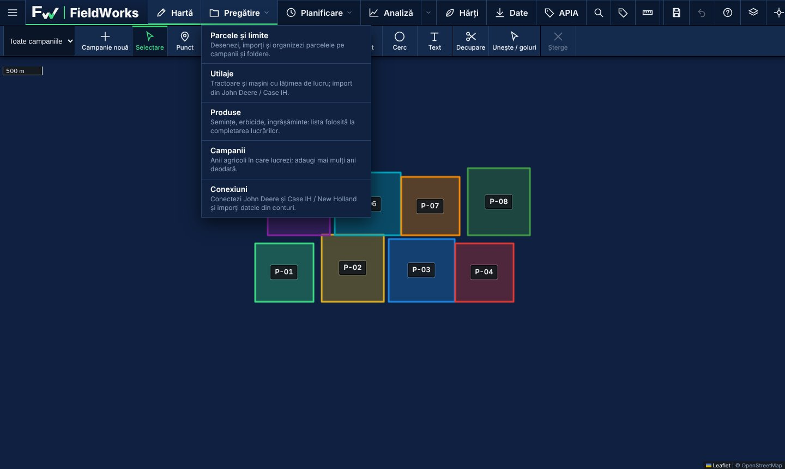
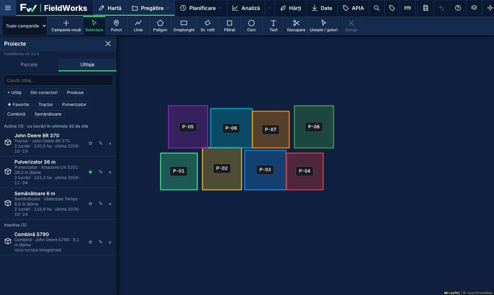
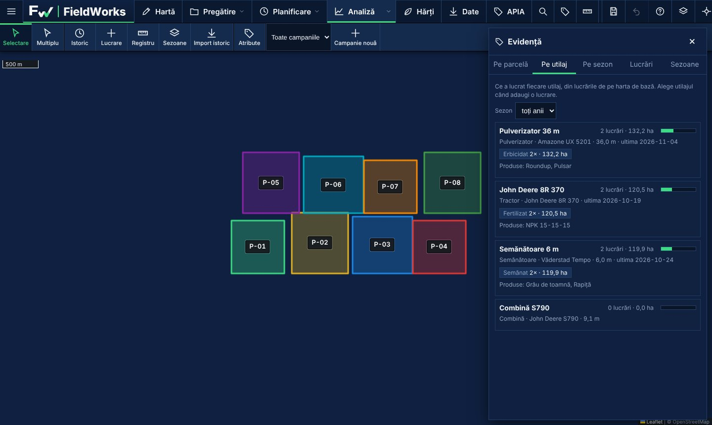
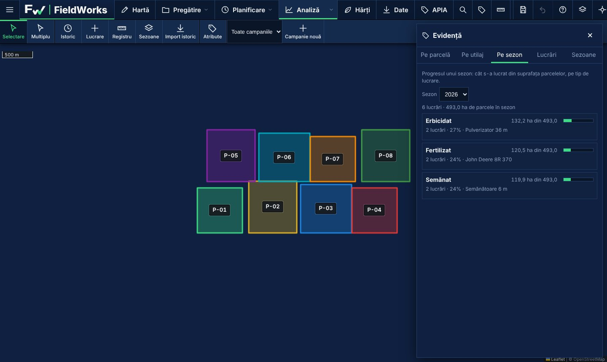

FieldWorks is a desktop mapping tool built for our own farm. It brings parcels, drone maps, field operations and equipment records together, so every parcel has a clear history.
FieldWorks este o aplicație de hartă pentru computer, construită pentru ferma noastră. Adună parcelele, hărțile din dronă, lucrările și utilajele într-un singur loc, ca fiecare parcelă să aibă un istoric clar.




Parcels, lines and circles on a satellite map, with area, distance and bearing.
Parcele, linii și cercuri pe harta satelit, cu suprafață, distanță și azimut.
Turn drone images into maps, vegetation indices and management zones.
Transformi imaginile din dronă în hărți, indici de vegetație și zone de lucru.
What was done, when and with what, by parcel, by machine and by season.
Ce s-a lucrat, când și cu ce, pe parcelă, pe utilaj și pe sezon.
Imports our own fields, boundaries, operations and equipment from our John Deere Operations Center account.
Importă câmpurile, limitele, lucrările și utilajele din propriul nostru cont John Deere Operations Center.
FieldWorks runs on our own computers. It connects only to accounts that belong to Totagro SRL, and only after we sign in and approve access ourselves.
Access tokens are stored encrypted on the computer. Imported data stays on that computer. We do not collect, sell or share data from other users, and the app has no public sign-up.
FieldWorks rulează pe calculatoarele noastre. Se conectează doar la conturi care aparțin Totagro SRL, și doar după ce ne autentificăm și aprobăm accesul noi înșine.
Jetoanele de acces sunt păstrate criptat pe calculator. Datele importate rămân pe acel calculator. Nu colectăm, nu vindem și nu partajăm date ale altor utilizatori, iar aplicația nu are înregistrare publică.